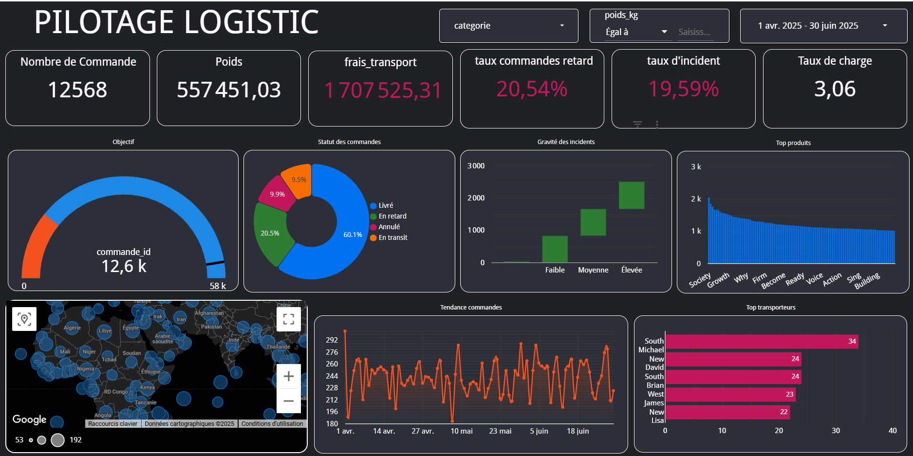

VisionPlus – Dashboard Performance Commerciale

🎯 Objectif :
Fournir une vision claire et opérationnelle des ventes, profits et retours afin d’aider
à piloter l’activité commerciale d’une enseigne spécialisée dans les lunettes et accessoires.
L’objectif : identifier les produits à forte rentabilité, réduire les retours et renforcer les décisions.
🚀 Particularité :
Dashboard construit à partir d’un dataset réaliste et volontairement imparfait,
simulant les conditions d’un projet en entreprise.
Une analyse croisée ventes × retours × profits × saisonnalité permet d’anticiper les risques
et optimiser la stratégie commerciale.
📊 Indicateurs & Insights :
- Taux de retour global & par catégorie
- Produits les plus rentables vs les plus retournés
- Analyse par genre (hommes / femmes)
- Saisonnalité des retours & des pics de vente
- Comparaison ventes vs retours sur l’année
- Profit mensuel & anomalies commerciales
- Alerte visuelle automatique sur les produits "à risque"
🛠 Outils & Méthodes :
Looker Studio (dashboard cloud), SQL (modélisation),
Data Cleaning, Feature Engineering, storytelling visuel,
design UI (fond sombre, couleurs lisibles, filtres optimisés).